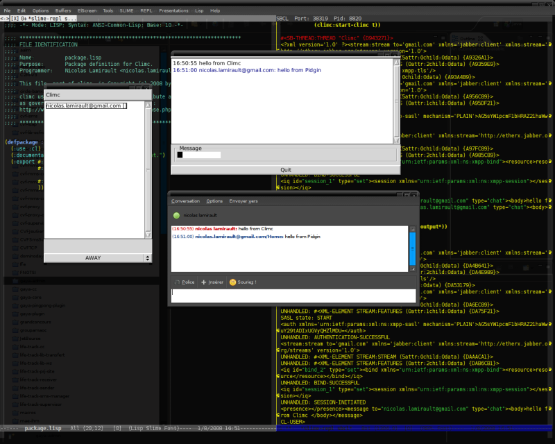

Climc is a Common Lisp Instant Messaging Client. It is developed on Debian GNU/Linux , using SBCL .
climc was written by Nicolas Lamirault and is available under a MIT style license.
Installation using asdf-install
Not yet.
Manual Installation
Download source code from : Google Code
climc needs McClim, McClim-TrueType, cl-xmpp, cl-ppcre and their dependencies.
ASDF is used for compilation. Register the .asd file, e.g. by symlinking it, then compile climc using asdf:operate.
$ ln -sf `pwd`/climc.asd /path/to/your/registry/ * (asdf:operate 'asdf:load-op :climc)
Usage
* (climc:start-climc)
Screenshots
-
A talk between Climc and Pidgin :

Recent changes
2009-02-01
- A new web site.
2008-07-31
- Project creation.